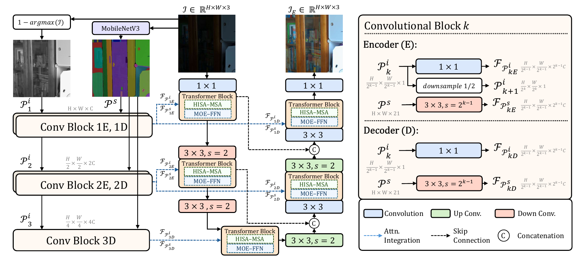
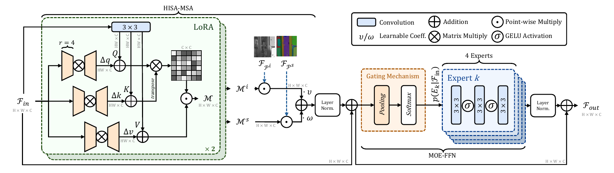
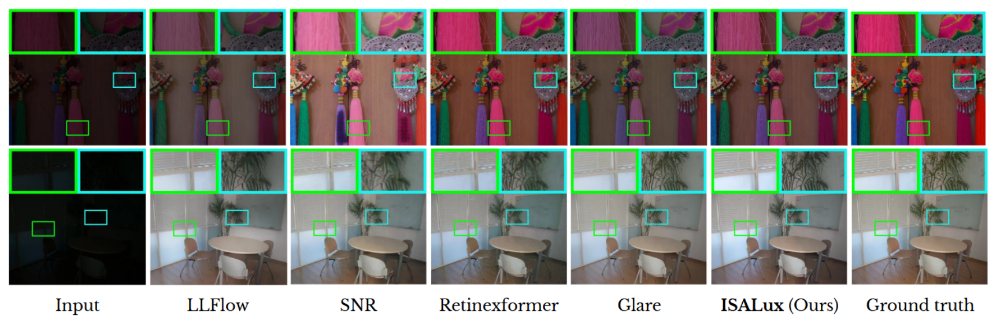

Abstract
We introduce ISALux, a novel transformer-based approach for Low-Light Image Enhancement (LLIE) that seamlessly integrates illumination and semantic priors. Our architecture includes an original self-attention block, Hybrid Illumination and Semantics-Aware Multi-Headed Self-Attention (HISA-MSA), which integrates illumination and semantic segmentation maps for enhanced feature extraction. ISALux employs two self-attention modules to independently process illumination and semantic features, selectively enriching each other to regulate luminance and highlight structural variations in real-world scenarios. A Mixture of Experts (MoE)-based Feed-Forward Network (FFN) enhances contextual learning, with a gating mechanism conditionally activating the top K experts for specialized processing. To address overfitting in LLIE methods caused by distinct light patterns in benchmarking datasets, we enhance the HISA-MSA module with low-rank matrix adaptations (LoRA). Extensive qualitative and quantitative evaluations across multiple specialized datasets demonstrate that ISALux is competitive with state-of-the-art (SOTA) methods. Additionally, an ablation study highlights the contribution of each component in the proposed model.
Architecture
ISALux is a two-level U-shaped transformer. An illumination prior and a semantic prior are computed from the low-light input, adapted to each level with lightweight convolutions, and injected into every attention block.

Overview of ISALux. The illumination prior is 1 − maxc(I); the semantic prior is the 21-class probability map of a frozen MobileNetV3 segmenter.
Illumination and semantic priors
Both priors are adapted to the channel depth of each transformer block, with a 1×1 convolution for illumination and a strided 3×3 convolution for semantics.
HISA-MSA
Two parallel attention modules, each with LoRA on Q, K and V. Their outputs are modulated by the illumination and semantic maps and fused with learnable weights.
MoE-FFN
A gating network over average-pooled features activates the top 2 of 4 convolutional experts, so each image is processed by specialised paths.

The HISA-MSA and MoE-FFN blocks that make up each transformer block.
Quantitative and qualitative evaluation
LOL and SDSD
| Method | Params (M) | LOL-v1 | LOL-v2-R | LOL-v2-S | SDSD-in | SDSD-out | Average | ||||||
|---|---|---|---|---|---|---|---|---|---|---|---|---|---|
| PSNR | SSIM | PSNR | SSIM | PSNR | SSIM | PSNR | SSIM | PSNR | SSIM | PSNR | SSIM | ||
| Restormer (CVPR '22) | 26.1 | 22.43 | 0.823 | 19.94 | 0.827 | 21.41 | 0.830 | 25.67 | 0.827 | 24.79 | 0.802 | 22.85 | 0.822 |
| SNR-Net (CVPR '22) | 4.01 | 24.61 | 0.842 | 21.48 | 0.849 | 24.14 | 0.928 | 29.44 | 0.894 | 28.66 | 0.866 | 25.87 | 0.876 |
| LLFlow (AAAI '22) | 37.7 | 25.13 | 0.872 | 26.20 | 0.888 | 24.80 | 0.919 | – | – | – | – | 25.38 | 0.893 |
| LLFormer (AAAI '23) | 24.6 | 25.75 | 0.823 | 26.19 | 0.819 | 28.00 | 0.927 | – | – | – | – | 26.64 | 0.856 |
| DiffLight (CVPR '24) | 51.7 | 25.85 | 0.876 | 26.19 | 0.819 | 28.00 | 0.927 | – | – | – | – | 26.68 | 0.874 |
| ExpoMamba (ICML '24) | 41 | 25.77 | 0.860 | 28.04 | 0.885 | – | – | – | – | – | – | 26.91 | 0.873 |
| LL-SKF (CVPR '23) | 39.91 | 26.79 | 0.879 | 28.45 | 0.905 | 29.11 | 0.953 | – | – | – | – | 28.12 | 0.912 |
| Retinexformer (ICCV '23) | 1.61 | 27.18 | 0.850 | 27.71 | 0.856 | 29.04 | 0.939 | 29.77 | 0.896 | 29.84 | 0.877 | 28.71 | 0.884 |
| GLARE (ECCV '24) | 44.04 | 27.35 | 0.883 | 28.98 | 0.905 | 29.84 | 0.958 | 30.10 | 0.896 | 30.85 | 0.884 | 29.42 | 0.905 |
| ISALux (ours) | 1.85 | 27.63 | 0.881 | 29.76 | 0.908 | 30.78 | 0.956 | 30.67 | 0.909 | 31.58 | 0.895 | 30.08 | 0.910 |
Table 1 of the paper. ISALux has the highest PSNR on every dataset and the highest SSIM on LOL-v2-R, SDSD-in and SDSD-out.
LOL-Blur
| Method | PSNR | SSIM |
|---|---|---|
| FourierDiff (CVPR '24) | 20.53 | 0.710 |
| DeblurGAN-v2 (ICCV '19) | 22.30 | 0.745 |
| Retinexformer (ICCV '23) | 22.90 | 0.824 |
| LEDNet (ECCV '22) | 25.74 | 0.850 |
| ASP-LED (ICRA '24) | 26.73 | 0.866 |
| VQCNIR (AAAI '24) | 27.79 | 0.875 |
| ISALux (ours) | 28.01 | 0.903 |
Inference time
| Method | Time (ms) |
|---|---|
| GLARE (ECCV '24) | 650 |
| LLFlow (AAAI '22) | 378 |
| Retinexformer (ICCV '23) | 300 |
| ISALux (ours) | 105 |
Average over LOL test images at 400×600.
Qualitative comparison

Qualitative results on the LOL dataset. ISALux preserves colours and avoids the artifacts of competing methods.
Video demonstrations
Real low-light clips enhanced frame by frame by ISALux. Choose a clip and the benchmark checkpoint used for the enhancement; the input and the result play in sync.
Enhanced clips were produced at 608×400 and are shown at the original 16:9 aspect ratio.
BibTeX
@inproceedings{balmez2026isalux,
title = {ISALux: Illumination and Semantics-Aware Transformer Employing Mixture of Experts for Low Light Image Enhancement},
author = {Balmez, Raul and Brateanu, Alexandru and Orhei, Ciprian and Ancuti, Codruta O. and Ancuti, Cosmin},
booktitle = {Proceedings of the IEEE/CVF Winter Conference on Applications of Computer Vision (WACV)},
year = {2026},
eprint = {2508.17885},
archivePrefix = {arXiv}
}